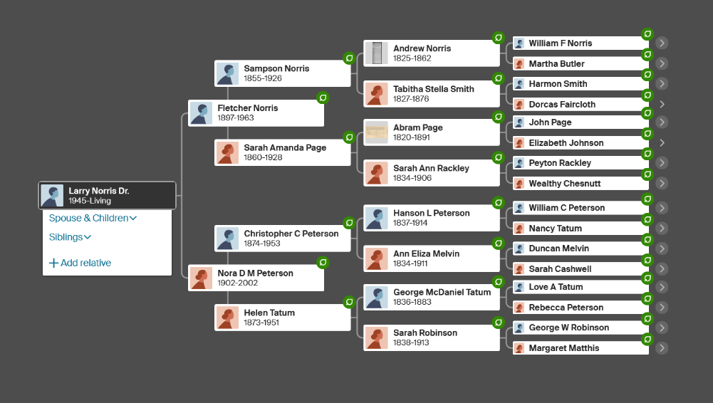

Began his journey at FTCC as an English instructor
Chairman of the English Department
Appointed Vice President for Academic Affairs
Served as President of FTCC
Dr. Norris dedicated nearly four decades to advancing education and workforce development. His leadership transformed FTCC through technological innovation while maintaining its core mission of serving the community.
Dr. Norris was an early and avid user of genealogy web sites, and traced his ancestry back to before the Norman invasion of England.
In his retirement years, Dr. Norris found joy in the simple pleasures of life: tending to his garden, sharing daily moments with his beloved dog Esther, and sharing his love of British mysteries and cooking with his son Andrew.
As a son trying to find the right words to remember his father, the best words I can use are those he wrote in 1988 to remember his own father, Fletcher Norris:
Time for each of us is a precious gift, never guaranteed and easily lost in the process of living. Too often we set our eyes towards goals, frantically work toward the accomplishment, but fail to savor the process. Every word and action will have a direct consequence for good or bad. The saddest of all remembrances is looking back at lost opportunities to show our love or to share ourselves with family, friends, and even strangers. How wonderful to look back at Fletcher Norris and remember his love for his family and fellowman, to have vivid pictures of him taking time to play with his children and grandchildren, to help a friend in need, and to work hard, always with joy in his heart, to provide for his family.
None of us knows what effect our living will have on the world. Someday our descendents will look back at us and remember what impact we had on those around us. From the union of Fletcher and Nora, there have been more than 50 direct descendents to date, each with his or her own special gift to influence the world.
As for man, his days are like grass; he flourishes like a flower of the field;
For the wind passes over it, and it is gone, and its place knows it no more.
But the steadfast love of the Lord is from everlasting to everlasting upon those who fear him, and his righteousness to children's children.
To those who keep his covenant and remember to do his commandments.
Psalm 103
In lieu of flowers, donations to the FTCC Foundation's Fletcher and Nora P. Norris Memorial Endowed Scholarship are greatly appreciated.